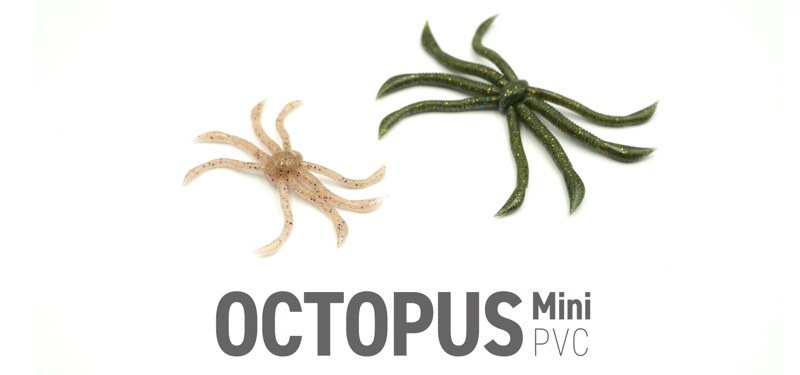
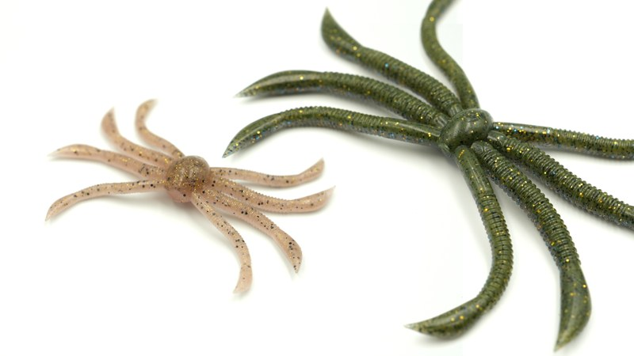
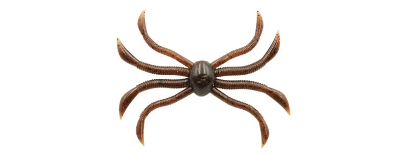
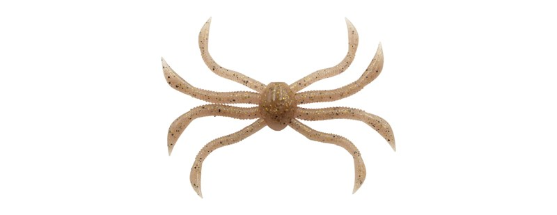
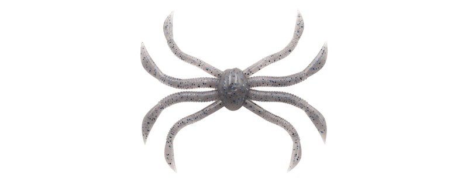
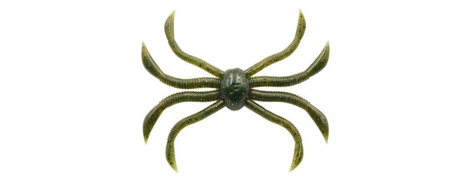
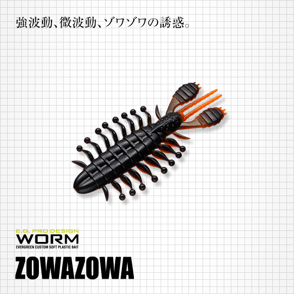
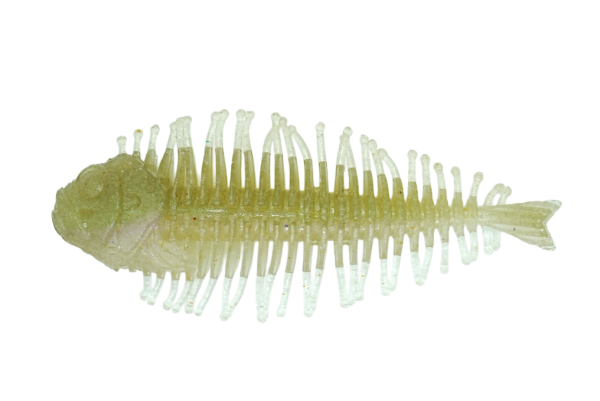

オクトパスミニ
（OCTOPUS Mini）
オクトパスミニは、フィッシュマグネットのクリーチャーワーム「オクトパス」の一口サイズのモデルです。考案者は秦拓馬さん。
ただ小さくするのではなく、中心の球体の大きさはそのままに全体だけを95mmに小さくして、集魚力・飛距離・水押しを保ったのが最大の特徴です。「コンパクトなのにボリューミー」なクリーチャーです。

画像出典:フィッシュマグネット公式HP
スペック
- メーカー
- FISH MAGNET（フィッシュマグネット）
- 考案
- 秦拓馬
- タイプ
- クリーチャーワーム
- 全長
- 95mm
- 入り数
- 2本
- カラー
- 全6色
- ターゲット
- バス
- 価格
- 1,375円（税込）
▼今すぐチェック
オクトパスミニの特徴
集魚パワーそのままに、一口サイズに
-
ゼロから設計し直したミニサイズ
単純に縮小したのではなく、集魚力・キャスタビリティ・水押しを保つためにゼロから設計し直している。
-
球体の大きさはそのまま
オリジナルとほぼ同じ大きさの球体を残したので、いろいろなリグに対応でき、飛距離と水押しも出せる。球体が大きいので身切れも少ない。
-
左右4本ずつのアーム
オリジナルのオクトパスと同じく、楕円の球体の左右にアームを4本ずつ並べた形。水を平面で受けて、止めても動かしてもアームがアピールする。
オクトパスミニの使い方
おすすめのリグは、インチワッキー（ZAPPU インチワッキーシリーズ）や、フリーリグ（RPZタリズマン#1/0〜#1＋スタンダードシンカー）です。カバーまわりやボトムに落として、アームの動きで誘いましょう。
バウヘッド＋スーパーキャプテンフックVガード#1/0（フックを交換して使用）で、カバーの中に入れる使い方もできます。タックルは、ベイトなら6.5〜7.3ftのMLクラス＋フロロ12lb、スピニングなら6.5〜7.2ftのMLクラス＋フロロ6〜8lbが推奨です。

画像出典:フィッシュマグネット公式HP
オクトパスミニの得意な状況
タフコンディションの時や、ベイトが小さい時、プレッシャーの高いフィールドで出番です。
オリジナルのオクトパスでは大きすぎる時に、一口サイズでも集魚力を落とさずに食わせられるのが強み。スレたバスにも口を使わせやすく、よく釣れるクリーチャーです。
ワンポイント
インチワッキーでは、ボトムに着いたら小さくシェイクして、アームだけを動かすように誘うと、球体がその場にとどまりながら食わせの間を作れます。
オクトパスとオクトパスミニの使い分け
| モデル | 全長 | 入り数 | 価格 |
こんな |
|---|---|---|---|---|
| オクトパス | 140mm | 2本 | 1,650円 | 強い |
| オクトパスミニ | 95mm | 2本 | 1,375円 | タフな |
スペックはフィッシュマグネット公式HPの記載より。
人気カラー
オクトパスミニの人気カラーを紹介します。

マルハタグリパングリーンパンプキン系の定番。どのフィールドでも使いやすい。

ワカサギシュリンプワカサギやエビを食べている時に。

シナモンブルーシュリンプエビ系のベイトを意識したカラー。

ウォーターメロンギルギルを食べているバスに。
※全6色。
画像出典:フィッシュマグネット公式HP
▼今すぐチェック
オクトパスミニに似ているルアー
-
 ウイニングクロー3.6インチ
DSTYLE
詳細はこちら＞
ウイニングクロー3.6インチ
DSTYLE
詳細はこちら＞
クロー系のワーム。カバーまわりで比べたい時に。
-

ゾワゾワ エバーグリーン 詳細はこちら＞フラット系の水押しで比べたい時に。
-

ギーラカンス4インチ DSTYLE 詳細はこちら＞エラストマー素材のワーム。違う素材で比べたい時に。